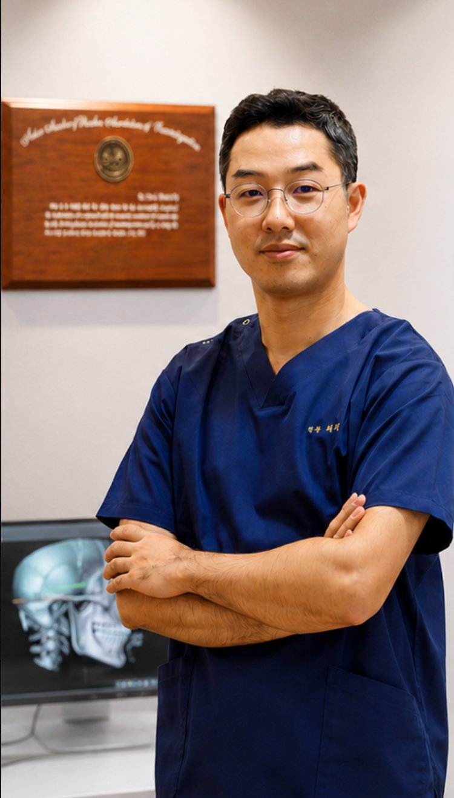

정확한 진단과 세심한 설명으로 진료합니다.

"안녕하세요. 이음턱편한치과 최문호 원장입니다. 치아만 보지 않고 턱관절과 뇌신경까지 확인합니다."
3D-CT 및 정밀검사를 통한턱관절 상태 평가
환자 상태에 따라 비수술적 치료를우선적으로 고려합니다
증상과 생활습관을 고려한1:1 맞춤 치료 계획
턱관절, 교합, 통증 — 어떤 불편함이든 편하게 문의해 주세요.